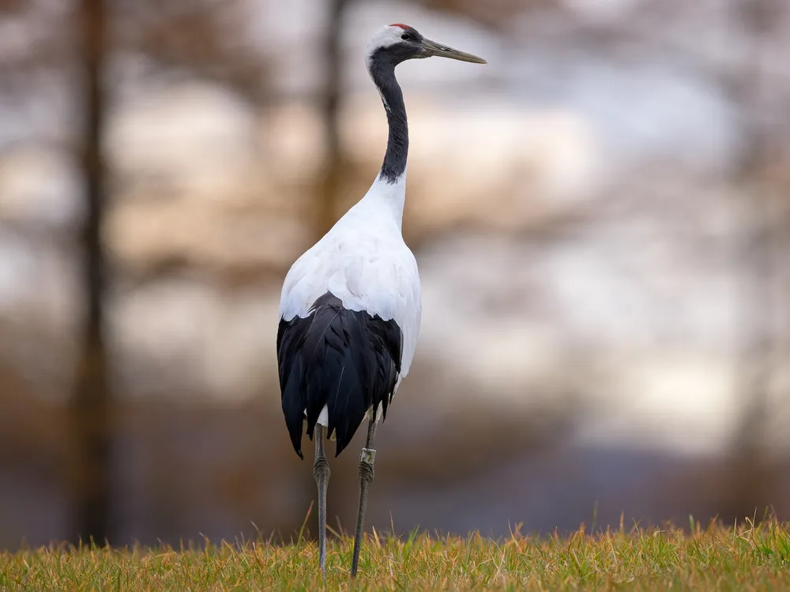

DMZ 생태문화지도 동물카드

살아있는 화석,
산양
산양
산양의 이름은 ‘숲 속에 사는 작은 양’이라는 뜻을 가지고 있는데 사실 생김새는 양보다 소를 많이 닮았습니다. 물론 크기는 소처럼 크지 않고 다 자라도 송아지보다 조금 크거나 작은 정도입니다.
그리고 놀랍게도 지금 산양의 생김새는 2백만 년 전의 산양의 모습과 거의 비슷하다고 합니다. 그래서 산양은 ‘살아있는 화석’이라고도 불립니다.

밤하늘의 제왕,
수리부엉이
수리부엉이

부엉이들 중에서 우리나라에 살면서 덩치가 가장 크고 사나운 부엉이가 있는데요 바로 수리부엉이 입니다. 몸길이가 약 70cm정도이며 날개를 펼치면 길이가 2m나 됩니다. 같은 부엉이인 칡부엉이의 두 배가 되는 크기이지요.
그래서 이름에도 맹금류를 나타내는 수리가 붙어 있습니다. 게다가 꿩, 토끼, 뱀, 고라니 새끼, 삵 그리고 같은 맹금류들 까지 사냥하는 명실상부한 우리나라 밤하늘의 제왕입니다.

건강한 생태계의 증인,
담비
담비
부엉이들 중에서 우리나라에 살면서 덩치가 가장 크고 사나운 부엉이가 있는데요 바로 수리부엉이 입니다. 몸길이가 약 70cm정도이며 날개를 펼치면 길이가 2m나 됩니다. 같은 부엉이인 칡부엉이의 두 배가 되는 크기이지요.
그래서 이름에도 맹금류를 나타내는 수리가 붙어 있습니다. 게다가 꿩, 토끼, 뱀, 고라니 새끼, 삵 그리고 같은 맹금류들 까지 사냥하는 명실상부한 우리나라 밤하늘의 제왕입니다.


최고의 향기 탓에 사라져가는
사향노루
사향노루

교활한 사냥꾼으로 알려져 있습니다.
숲 속에 몸을 숨기며 먹이를 찾아 다닙니다.

물속에 탑을 쌓는
어름치
어름치

초원에서 뛰노는 모습이 평화롭습니다.
군집 생활로 포식자로부터 자신을 보호합니다.
지리산으로 온걸 환영해!
반달가슴곰
반달가슴곰
초원에서 뛰노는 모습이 평화롭습니다.
군집 생활로 포식자로부터 자신을 보호합니다.

사치스러울 정도로 아름다운
호사비오리
호사비오리
호사비오리는 아름다운 외모 때문에 '호사스럽다'고 불립니다. 오리과의 비오리들 중 한 종류인 이 새는 전 세계적으로 희귀한 멸종위기종으로 외모가 참 근사한 것으로 유명합니다.
옆구리 쪽에 자리 잡은 반달무늬가 특별하며, 머리카락을 멋지게 뒤로 넘긴 것 같은 댕기가 인상적입니다. 그리고 붉은 부리와 그 끝의 노란 점은 마치 예쁜 립스틱을 곱게 바른 것 같습니다.

천년 전설의 주인공
두루미
두루미
순우리말인 두루미는 학(鶴)이라고도 불립니다. 타조에 이어서 지구상 두 번째로 큰 새로 추운 겨울을 우리나라에서 보냅니다. 그리고 전 세계에서 약 1500마리 정도만 살아가고 있는 국제적 멸종위기 동물입니다.
군집 생활로 포식자로부터 자신을 보호합니다.

앞으로도 계속 만나고 싶은
점박이 물범
점박이 물범

초원에서 뛰노는 모습이 평화롭습니다.
점박이물범은 8000마리에서 현재 600마리 안팎으로 줄며 위험한 지경에 처해 있습니다. 연안개발로 인한 서식지 파괴, 기후변화로 인한 생태계 교란 때문입니다. 어쩌면 조만간 점박이물범을 수족관에서만 만날 수밖에 없을지도 모릅니다